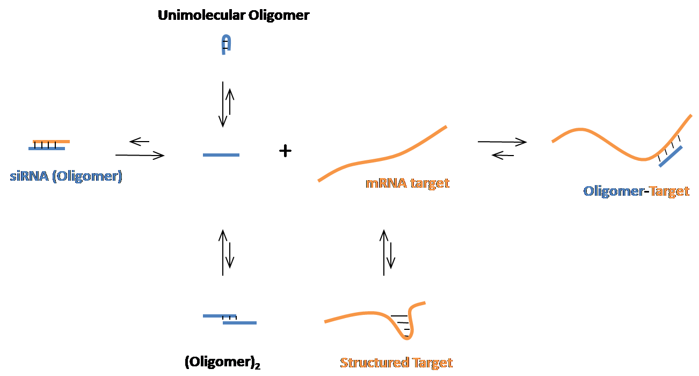

|
OligoWalk is used to predict the accessible regions in an RNA target to oligonucleotide hybridization. It calculates thermodynamic features of sense-antisense hybidization and predicts the free energy changes of oligonucleotides binding to a target RNA. The secondary structures of the oligomer and target mRNA are considered in the OligoWalk algorithm. It can be used to design efficient siRNA targeting a given mRNA sequence.

USAGE: OligoWalk <sequence file> <report file> [options]
Required parameters:
| <sequence file> |
The name of a sequence file (SEQ, FASTA) or structure file (CT) containing the input sequence. The default is to load a sequence file. When a structure is loaded, the --structure option must be specified. A structure must be the input for --mode 1 (local structure). |
| <report file> |
The name of an output file to which report results will be written. |
| -d, --dna |
Specify that the oligomers are DNA. (The target sequence is still assumed to be RNA). This causes DNA:RNA hybridization energies to be used.
(In the absense of this flag, the default behavior is to assume both the oligomers and the target sequence are RNA) |
| -h, --help |
Display the usage details message. |
| -v, --version |
Display the RNAstructure package version information. |
| --html |
Write the report in HTML format instead of plain text. |
| --no-header |
The default behavior is to include a summary of the parameters and options used in the
calulation directly in the output report file. This option DISABLES that behavior. (I.e. the header information will not be included in the report file if this flag is present.) |
| -score |
Score the siRNA prefilter. |
| --structure |
Specifies that the input is a structure, not a sequence. |
| -w, --webserver |
Use special output for running OligoWalk as a webserver. This implies HTML=true and it sends the header (which summarizes the parameters and options used in the calulation) to STDOUT instead of including them in the report. It also turns off progress updates. |
| -write |
Write sav files to save time in test mode. |
| -c, -co, --conc |
Specify the molar concentration of oligos. e.g. "1.5E-6", "1.5uM", or "0.0000015" (1.5 micromolar).
This may be used in conjunction with the '--unit' flag. See '--unit for more examples.
Unit Abbreviations: mM=10-3, uM=10-6, nM=10-9, pM=10-12 |
| -u, --unit |
Specifies a power-of-ten factor to multiply the concentration by.
This parameter is not required, because it is entirely possible to specify the concentration directly in scientific notation (e.g. "--conc 4.2E-3" or "--conc 4.2mM". However there may be some circumstances when it is convenient to separate the concentration from the units, e.g. "--conc 4.2 --unit -3" or "--conc 4.2 --unit mM"
This might be useful, for example, when the program is run as a backend to a graphical or web interface and the user has selected the units separately from the concentration (from a drop-down list etc).
Examples:
- 2.5 millimolar can be specified in any of the following ways:
- --conc 2.5mM
- --conc 2.5E-3
- --conc 2.5 --unit -3
- --conc 2.5 --unit mM
- 5x10-5 M can be specified in any of the following ways:
- --conc 5E-5
- --conc 50uM
- --conc 5 --unit -5
- --conc 50 --unit uM
- --conc 0.05 --unit mM
Unit Abbreviations: mM=10-3, uM=10-6, nM=10-9, pM=10-12 |
| -l, --length |
Length of oligomers for hybridization. |
| -dist |
Limit the maximum distance between nucleotides that can pair. |
| -st, --start |
Truncate the target sequence to end at this nucleotide position. This can improve runtime since only a subset of the original sequence will be folded and scanned. Use this in conjunction with the --end parameter. |
| -en, --end |
Truncate the target sequence (see the --start parameter). |
| -fi, --filter |
Whether to use the siRNA prefilter to prefill functional siRNA.
0=No Prefilter (default); 1=Use Prefilter |
| -fold |
Only fold a fragment with the specified size (plus the length of the oligomer), which is centered on the binding region.
When FOLDSIZE > 1, MODE (-m) and SUBOPTIMAL (-s) must both be 2. |
| -ss, --from |
Start position of scanning on folded region of target. |
| -se, --to |
End position of scanning on folded region of target. |
| -m, --mode |
Determines how target structure is used:
1=Break Local Structure. (Balance of computational cost vs. model accuracy.) (Works with --suboptimal 0, no suboptimals, and --suboptimal 3, the heuristic for suboptimals.)
2=Refold target RNA after oligo binding. (Slowest, but best consideration of target structure.)
3=No target structure considered. (Fastest, but does not consider the free energy of folding of target structure.)
|
| -s, --suboptimal |
Determines suboptimal structure options for target structure:
0=Do not consider suboptimal structures. (This option is fastest, but least accurate for targets such as mRNA that will fold to multiple structures in equilibrium.)
1=Use AllSub to generate all suboptimal structures. (This option is generally not recommended.)
2=Use Partition Function to generate all suboptimal structures. (This option is slowest, but most accurate.)
3=Use a heuristic method for both oligo-free and oligo-bound RNA. (The heuristic is that used by Fold to generate suboptimal structures. This is second fastest.)
4=Use stochastic sampling to generate 1000 structures. (This option is almost as a good as 2, but slower than 0 and 3.)
|
| -sh, --shape |
Specify a SHAPE data
file to be used to generate restraints. These
restraints specifically use SHAPE pseudoenergy restraints.
Default is no SHAPE data file specified. |
| -test |
Perform self-tests. The parameter should be a list of space-separated test numbers, e.g.: -test '1 2 5' |
When using --mode 1 (breaking local structure), a structure (ct file) must be read instead of a sequence. Use --structure and specify a ct file name as the first parameter. --suboptimal 0 or --suboptimal 3 must be used because other subpotimal approaches are not implemented. When using --suboptimal 3, the structure should be generated with Fold, which uses a heuristic to generate suboptimal structures.
For --mode 2 and --mode 3, a structure file can be read, but only the sequence information will be used, i.e. the structure will be predicted again by OligoWalk.
- J. Lu and D.H. Mathews. (2008) "Efficient siRNA selection using hybridization thermodynamics"
Nucleic Acids Research, 36:640-647.
- Reynolds, A., Leake, D., Boese, Q., Scaringe, S., Marshall, W.S. and Khvorova, A. (2004) Rational siRNA design for RNA interference. Nat Biotechnol., 22, 326-330.
- Lu, Z.J., Turner, D.H. and Mathews, D.H. (2006) A set of nearest neighbor parameters for predicting the enthalpy change of RNA secondary structure formation. Nucleic Acids Res., 34, 4912-4924.
- D.H. Mathews, M.D. Disney, J.L. Childs, S.J. Schroeder, M. Zuker, and D.H. Turner. "Incorporating Chemical Modification Constraints into a Dynamic Programming Algorithm for Prediction of RNA Secondary Structure"
Proceedings of the National Academy of Sciences USA, 101, 7287-7292, (2004).
- D.H. Mathews, J. Sabina, M. Zuker, and D. H. Turner "Expanded Sequence Dependence of Thermodynamic Parameters: Improves Prediction of RNA Secondary Structure" Journal of Molecular Biology, 288, 911-940, (1999).
- N. Sugimoto, S. Nakano, A. Katoh, H. Nakamura, T. Ohmichi, M. Yoneyama, and M. Sasaki
"Thermodynamic Parameters to Predict the Stability of RNA/DNA Hybrid Duplexes"
Biochemistry, 34, 11211-11216, (1995).
|